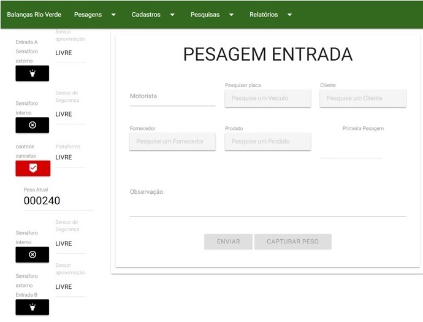

Sistema para gerenciamento de pesagens.
Composto pelos seguintes módulos:
Cadastros: Veículo, Operador, Cliente, Fornecedor, Produto, Descontos;
Pesagens: Inicial, Final, Manual e Avulsa;
Pesquisas:
Por Placa, Fornecedor, Cliente, Produto, Pesagem por datas, por tipos de pesagem e por número do ticket;
Relatórios: Produtos recebidos/expedidos, Pesagens incompletas;
Controle de cancelas, semáforos e sensores de posicionamento:
Sistema totalmente adaptado a necessidade do cliente, desenvolvido em Java Script, framework Angular.js; Banco de dados MySQL; Gerenciador de banco phpMyAdmin; Compatibilidade: Windows XP, 2000, 7, 8, e todos as versões de Windows a partir de 8.1.
